Indicators are weak organic acids or weak organic bases with a specific chemical structure. The color of their molecules, i.e., the color of the indicator, differs from the color of their ions that result from their dissociation. The basic form of the indicator is responsible for this difference.
Let HΔ be an indicator that is a weak organic acid.
We write its dissociation reaction as:
\[\underset{\text{Colour A}}{Η \Delta} \; \rightleftharpoons \; \underset{\text{Colour B}}{H^+ + \Delta^-}\]
In an acidic solution the \([H^+]\) is high so according to Le Chatelier principle the position of the chemical equilibrium shifts to the left and so the colour A predominates
In an acidic solution the \([OH^-]\) is high, which react with the \([H^+]\) reducing its concentration. So according to Le Chatelier principle the position of the chemical equilibrium shifts to the right and so the colour B predominates
Each indicator has:
So the colour of the indicator depends on the pH of the environment and the \(K_{\delta}\) of the indicator
The transition range of an indicator can be calculated be the following formula:
\[pK_{\delta} \pm 1\]
If the transition range of an indicator matches the equivalence point of a titration, the indicator is suitable
Written by Fillios Memtsoudis